Systeemontwerp
Puntenverdeling
Theory exam: 30%
Project
- Design: 30%
- Implementation: 40%
Planning
- 27/9 Microservices
- 4/10 Decomposition 1
- 11/10 Decomposition 2
- 18/10 Workflows and collaboration
- 25/10 Geen Les
- 1/11 Geen Les
- 8/11 Geen Les
- 15/11 Scaling & Caching
- 22/11 Resiliency & Chaos Engineering
- 29/11 Organizational structures
- 06/12 Change management
---------Theorie--------
Ik heb pdfs van de boeken gevonden:
1 - Microservices
Application building: From then to now
Traditioneel stak men in een applicatie alle features in één app. Dit wordt natuurlijk snel een probleem als je applicatie evolueert to één grote monoliet van spaghetticode.
Een volgende stap was de introductie van layering. Door bijvoorbeeld de presentatie, business logic en persistentie te scheiden, werd het onderhoud en uibreiden van de applicatie enigszins eenvoudiger. Al snel was er een nood aan meer lagen door toenemende complexiteit. Sommige lagen zouden dan gedeeld kunnen worden tussen verschillende applicaties.
Een andere manier om separatie toe te voegen is crosscutting flows. Hier bepalen we dan per use-case en flow doorheen de verschillende lagen van onze applicatie.
| Layering | Crosscutting flows |
|---|---|
| 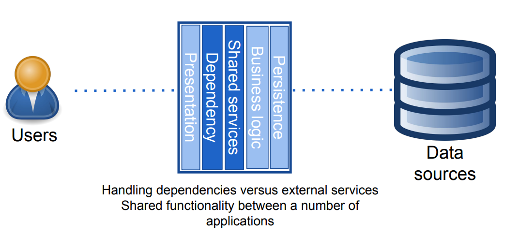 | 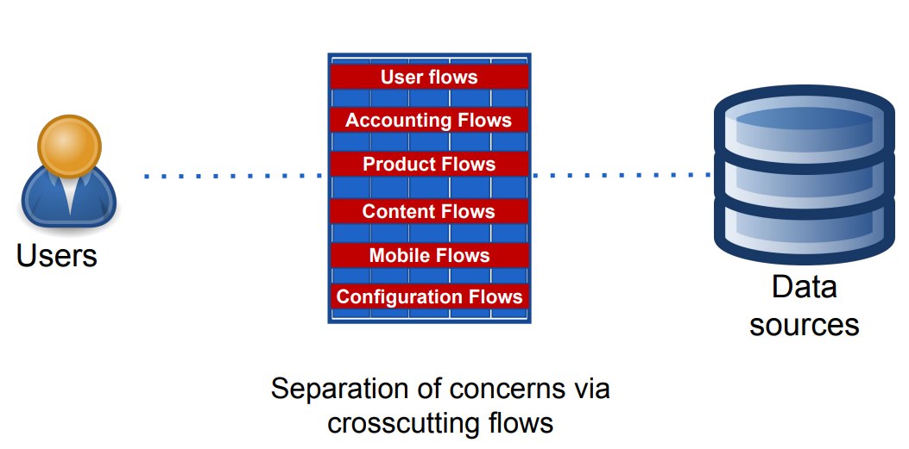 |
Zelfs met al deze verbeteringen, zitten we nog steeds met hetzelfde probleem. De applicatie is nog steeds moeilijk onderhoudbaar, uitbreidingen verlopen moeizaam en veranderingen in één deel introduceren vaak ongewilde neveneffecten in een ander deel.
Een ander probleem de toenemende belasting op ons systeem. Hoe kunnen we daarmee omgaan? Dit kan op twee manieren:
- Vertical scaling: Dit is het upgraden van onze hardware (meer RAM, betere CPU, grotere opslag)
- Horizontal scaling: We dupliceren onze applicatie over meerdere machines
Sharding
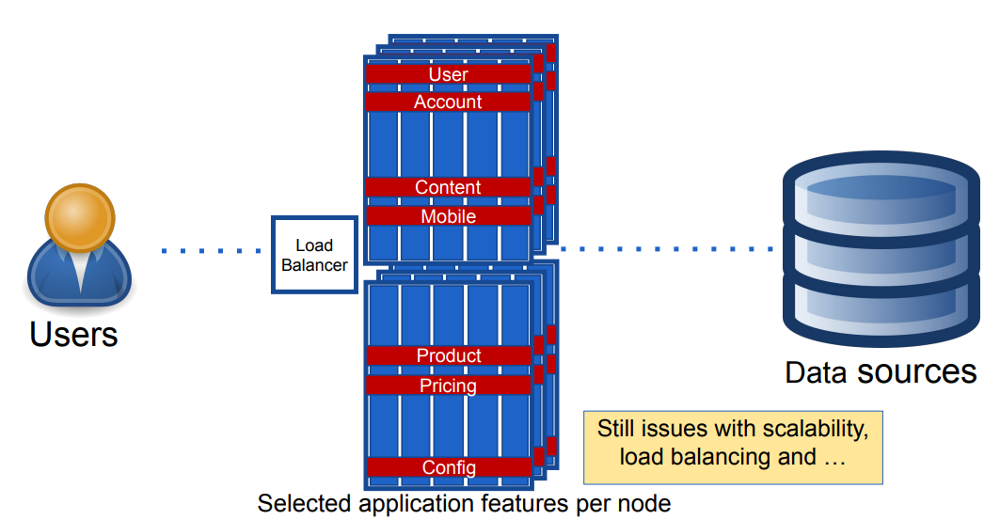
Om verder te gaan op het principe van horizontal scaling, kunnen we gebruik maken van sharding. Hier verdelen we bepaalde features of crosscutting flows over verschillende nodes. Dit brengt natuurlijk weer problemen met zich mee. Elke server moet beschikken over de volledige application stack, met gevolg dat als één deel een fout bevat, de hele stack kapot zou kunnen gaan. Dependencies zijn moeilijk te beheren en bovendien trekt de security van dit model op niks. Een lek in de presentatielaag zou een hacker bijvoorbeeld toegang kunnen geven aan de databank.
Growing out of your monolith
Je applicatie groeit en de codebase is zo groot dat het onmogelijk is voor een persoon om hem volledig te begrijpen, als hi jer dan aan wilt werken duurt het veel te lang voor zijn IDE opstart. Wanneer de code geschreven is, willen we de nieuwe features deployen. Hiervoor moeten we weeral de hele applicatie opnieuw builden. We moeten bovendien ook de volledige test suite laten draaien. De databank is outdated, maar we kunnen heb niet updaten omdat alle andere services afhankelijk zijn van de verouderde versie.
Verder kan één bug het hele systeem onderuit halen. Omhoog schalen is practisch onmogelijk omdat we de hele applicatie moeten dupliceren. Het is hier ook onmogelijk om de juiste infrastructuur te voorzien, want het kan dat verschillende modules nood hebben aan verschillende resources, maar ze zitten allemaal vast aan elkaar.
Service oriented architecture
Volgens het principe van SOA kunnen we onze monoliet opsplitsen in verschillende services. Deze services beschikken ieder over hun eigen functionaliteit en kunnen op afstand (typisch over het netwerk) aangesproken worden via een API.
Nu moet je natuurlijk opletten dat je niet gewoon verschillende lagen maakt, zoals in een vorig deel vermeld. Als je services te sterk van elkaar afhangen vertraag je de ontwikkeling en vermoeilijk je schaalbaarheid en herbruikbaarheid.
Loose coupling
Werk volgens domain driven design. We maken een functionele onderverdeling, georganiseerd rond de capabiliteiten van het systeem. Nieuwe features vereisen dan meestal geen veranderingen in alle microservices. Elke microservice kan onafhankelijk gedeployed en vervangen worden.
Zorg ervoor dat je niet eindigt met een gedistribueerde monoliet. Als je bijvoorbeeld database id's gebruikt voor je API, creëer je een afhankelijkheid aan één database in alle services.
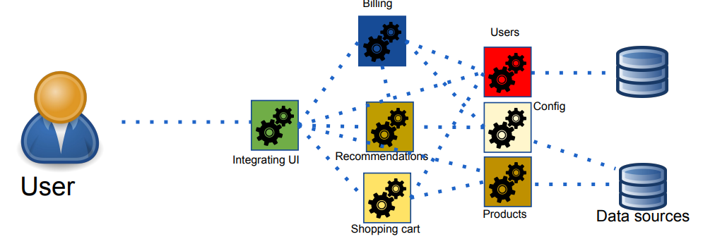
Boundaries
Zorg ervoor dat je een duidelijke lijn trekt tussen je verschillende microservices. Elke service moet de eigenaar zijn van zijn eigen data. Deel dus geen databases tussen je services.
Microservices in a nutshell
Microservice architectural style
- Ontwikkel een applicatie als een verzameling van kleine services
- Elke service draait zijn eigen proces
- Services communiceren met elkaar via lightweight mechanismen (http, ...)
Microservices
- Georganiseerd volgens business capabilities (niet technische)
- Kunnen onafhankelijk geautomatiseerd gedeployed worden
- Zo weinig mogelijk gecentraliseerd beheer
- Kunnen in verschillende talen/stacks ontwikkeld worden, met verschillende databanken
- Loose coupling, strong functional cohesion
Monolith vs Microservices
Hier een overzicht van de voor- en nadelen van een applicatie ontwikkeld als monoliet tegenover microservices:
Monolith
Voordelen
- Goed voor een beginnende applicatie
- Geen complexiteit van verschillende services
Nadelen
- Codebase moeilijk te begrijpen
- Moeilijk schaalbaar, want elke server moet de volledige applicatiestack draaien
- Moeilijk uitbreidbaar en onderhoudbaar, want één verandering kan veel gevolgen hebben
- Je systeem kan platliggen door één bug
Microservices
Voordelen
- Services kunnen onafhankelijk gedeployed worden
- Gemakkelijker uit te breiden en te onderhouden, één verandering vereist typisch geen aanpassing in meerdere microservices. Fouten worden ook niet overgedragen tussen services.
- Schaalbaarder
- Services kunnen in verschillende talen/stacks ontwikkeld worden, met verschillende databanken
Nadelen
- Foute toepassing kan leiden tot een gedistribueerde monoliet
- Gedistribueerde systemen zijn complex
- Communicatie over het netwerk is trager. Data moet geserialiseerd worden en over een mogelijk onstabiele verbinding verstuurd worden.
- Moeilijker om tests te schrijven die meerdere services omvatten
- Microservices introduceren veel overhead, zowel technisch als organisatorisch. Elke service is verantwoordelijk voor zijn eigen opslag et cetera. Veel services vereisen veel werknemers.
- Beter geschikt voor grote bedrijven dan voor startups
Verschil tussen SOA en microservices
Bij SOA ligt de nadruk op services maken die gedeeld kunnen worden doorheen je applicatie. Microservices gaan een stapje verder. Onze hele architectuur is in dit geval gebouwd op individuele services die onafhankelijk werken. Nog een verschil is dat we bij microservices onze services zo klein mogelijk maken, dit is geen vereiste voor SOA.
2 - Decomposing
Requirements analysis
Requirements analysis is een proces waarbij we de vereisten van een systeem identificeren, documenteren en verifiëren. We verzamelen en analyseren informatie van stakeholders omtrent de noden en doelen van het systeem.
We kunnen de requirements van een systeem opsplitsen in twee categorieën:
Functional
- Wat moet het systeem doen?
- Scalability, reliability, ... Alle -ilities
Non-functional
- Wat moet het systeem zijn?
- Pizza verkopen of overheden destabiliseren om bananen te kunnen verkopen?
Diagrams
Een diagram kan je helpen door drie dingen te verbeteren:
- Understanding
- Collaboration
- Communication
Er zijn een hele boel verschillende diagrammen die nuttig zijn voor een hele boel verschillende dingen.
Domain diagram
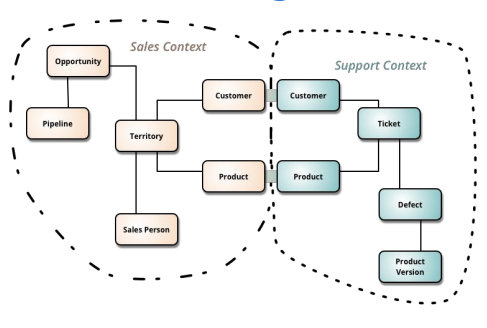
Een domeindiagram laat ons toe om een domeinmodel op te stellen en dit te delen met de stakeholders. Een UML klassediagram is ook een voorbeeld van een domeinmodel.
Elementen:
- Domain objects
Relaties:
- Inheritance
- Association
- depends-on
- ...
Sequence diagram
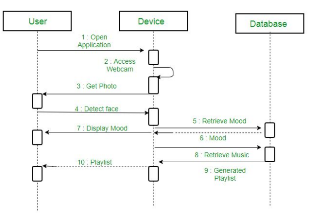
Een sequentiediagram toont één mogelijke sequentie van interacties. Ze zijn nuttig om de impact op niet-functionele requirements te tonen. Zo kan je voorkomend ingrijpen als je in je diagram ziet dat er een bepaald proces of thread geblokkeerd wordt. Of voorspellen wat er mis zou kunnen gaan als een bepaalde service geblokkeerd raakt of traag antwoordt.
Elementen:
- Objecten (dingen die iets doen)
Relaties:
- Interprocescommunicatie
Process diagram
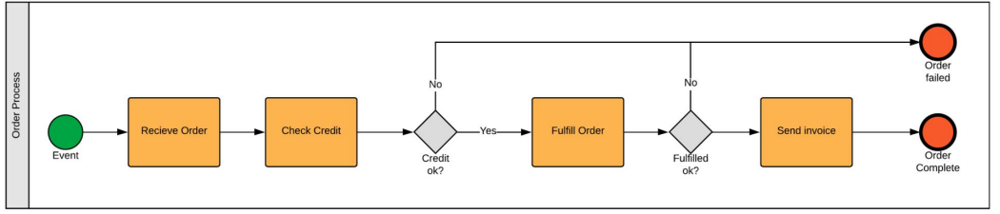
Een procesdiagram beschrijft de volledige workflow van een systeem en bestaat dus uit meerdere sequenties. Je kan zien hoe de control flow doorheen je applicatie beweegt en welke stappen er waar en door wie ondernomen worden.
Elementen:
- Processen
Relaties:
- Control flow
- Data flow
Service diagram
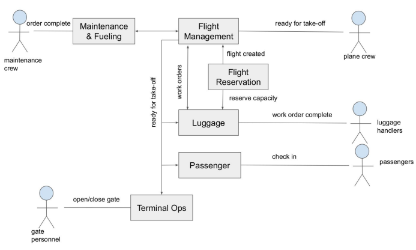
Een service diagram geeft een overzicht van de verschillende services en hun interacties. Dit is nuttig om een overzicht te krijgen in de high-level interacties tussen services en of de structuur van je systeem stand houdt. Je moet wel oppassen dat je genoeg betekenis geeft aan je interacties en consistent bent in je opmaak.
Elementen:
- Services and actors
Relaties:
- Interacties
Decomposition
Decompositie volgt een proces van drie stappen:
Identify and understand system operations
1a. Create a high-level domain model: praat met experten ubiquitous language om inzicht te krijgen in het probleemdomein
1b. Define the requests that your application must handle: we moeten weten welke systeemoperaties ons systeem moet ondersteuenen. Het is belangrijk om hier technische termen te vermijden. Er zijn twee soorten systeemoperaties:
- Commands: CRUD
- Queries: enkel lezen (typisch voor UI)
Identify services
Decompose monolith into microservices. Dit kan op één of meerdere van de volgende manieren:
- By business capabilities: splits de logica op volgens wat de organisatie doet (sales, marketing, customer service, ...)
- By sub-domain: maak een model voor elk subdomein van je business. Dit model heeft een andere context in elk subdomein.
- By technology: kan goed zijn voor performance, maar je systeem wordt wel gelaagd en dat is bad
- By data: Nuttig voor GDPR, bijvoorbeeld green en red zone. Voegt wel complexiteit toe.
Define service APIs and collaborations
- Dit kunnen operaties of events zijn
- 3a. Decide which service is the entry point for each system operation
- 3b. Determine the methods needed to support collaboration between services
Er zijn een aantal zaken die onze decomposition dwarszitten:
- Trage netwerkverbinding: vermijd dus overtollige communicatie tussen services
- Synchrone operaties: hierdoor wordt ons hele systeem vertraagd. Werk zo veel mogelijk asynchroon
- Verspreide data: een atomaire update van data is alleen mogelijk binnen één microservice
- God classes: Dit is een klasse die te veel verantwoordelijkheid bezit. Er zijn te veel andere services of klassen van hem afhankelijk. We kunnen het systeem opsplitsen in verschillende models die ieder geldig zijn in hun eigen bounded context, de er wordt in elk model enkel nadruk gelegd op de functionaliteit die daar nodig is, waardoor de functionaliteit van de god class verdeeld wordt.
3 - Architecture of a single microservice
Problems with layered architecture
Bij een gelaagde architectuur wordt het systeem verdeeld in een aantal horizontale lagen, met voor elke laag een bepaalde verantwoordelijkheid. Elke laag communiceert met zijn onder of bovenliggende lagen via vaste interfaces.
Er zijn een aantal problemen met een gelaagde architectuur. We beschikken over één presentatielaag en één persistentielaag. Omdat de businesslogica afhangt van de persistentielaag is bovendien onmogelijk om deze te testen zonder databank.
Verder veroorzaakt een gelaagde architectuur ook vaak een overvloed aan complexiteit en sterke afhankelijkheid tussen de verschillende lagen.
Hexagonal style
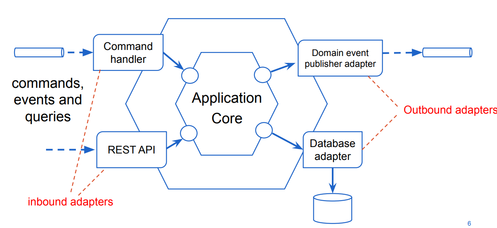
Een hexagonale architectuur is een designpatroon met als hoofdprincipe de scheiding tussen de core (business logica) van een systeem en verscheidene interfaces en adapters die het gebruikt om te communiceren met de buitenwereld.
We maken een onderscheid tussen inbound en outbound adapters. Een inbound adapter voorziet een API om de businesslogica op te roepen. Dit kan een REST API of een GUI zijn, maar ook een Kafka queue met events die verwerkt dienen te worden. Een outbound adapter roept andere systemen aan. Dit kan een database zijn of een call naar een externe service (bv. betaling), maar ook een push naar een Kafka queue. Ondertussen is deze manier van werken natuurlijk al een beetje verouderd.
Je kan een systeem maken van meerdere services die ieder apart in hexagonal style zijn geïmplementeerd.
Onion Style / Clean architecture
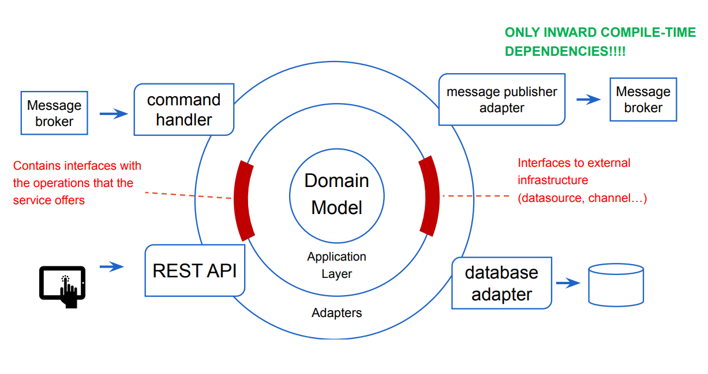
Onion style is een designpatroon waarbij een applicatie wordt opgedeeld in lagen in de vorm van een ajuin. Elke laag is alleen afhankelijk van dieper gelegen lagen. De buitenste laag bevat dan adapters die door middel van interfaces aan de applicatielaag verbinding met externe infrastructuur maken.
Transaction script vs Rich domain model
Transaction script
🔴 Applicatielaag
🔵 Domein model
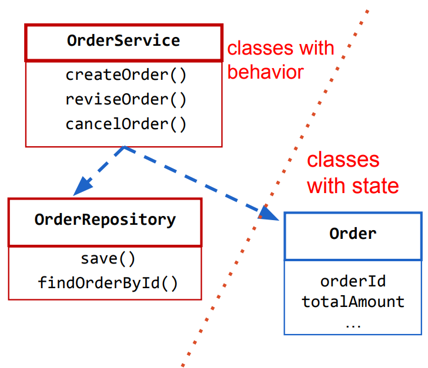
Een transaction script is een procedure die je maakt voor één query of command. Deze procedures groepeer je typisch samen in een "manager" of "service" klasse. Zo zit het gedrag van je applicatie eigenlijk alleen in de applicatielaag. Een transaction script bevat in dit geval alle businesslogica van dit deel van het domein. De domeinklassen bevatten in dit geval enkel een state, ze worden alleen gebruikt om data voor te stellen.
(Rich) Domain model
🔴 Applicatielaag
🔵 Domein model
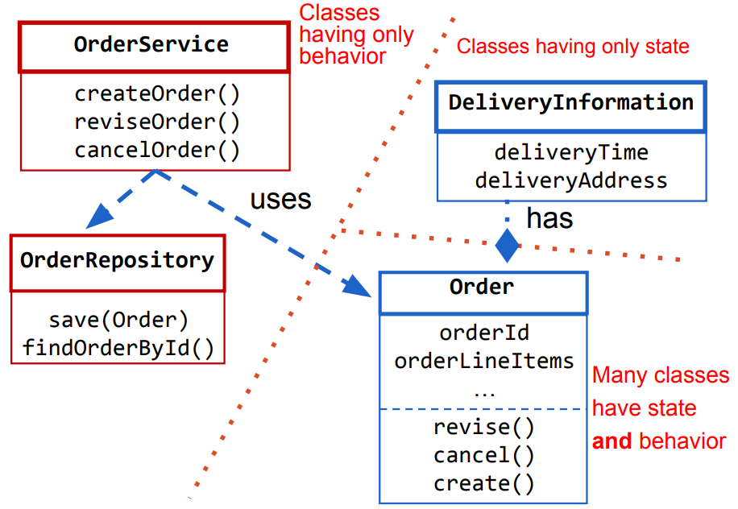
Bij een rich domain model zorgen we ervoor dat klassen een zo klein mogelijke verantwoordelijkheid hebben. We zorgen ervoor dat de logica die bij een bepaalde klasse hoort zich ook in die klasse bevindt. De applicatielaag is dan verantwoordelijk voor de uitvoering van die logica.
Verder is het belangrijk dat je domeinklassen concepten van in de echte wereld voorstellen, opgesteld volgens OO designpatronen, waardoor ze gemakkelijk uitbreidbaar zijn zonder code aan te moeten passen.
Patterns to create a rich domain model
Om het business domein voor te stellen, maken we gebruik van de volgende dingen:
Entities
Wordt gedefineerd door zijn identiteit, niet zijn attributen
Twee entiteiten met gelijke attributen zijn niet speciaal aan elkaar gelijk (of ongelijk bij ongelijke attributen)
Wordt geïdentificeerd door een ID
- Losgekoppeld van alle andere zaken (gebruik dus een UUID en geen database index of rijksregisternummer)
Bijvoorbeeld een product of een persoon
Values
Worden alleen onderscheiden door hun eigenschappen
Beschrijven domein-relevante attributen van entiteiten
- Hebben dus alleen betekenis binnen de context van een ander object
Twee values zijn gelijk als hun attributen gelijk zijn
Bijvoorbeeld een prijs of een kleur
Domain service
- Stelt het gedrag voor en is dus stateless
- Bevat business logica die moeilijk in één entity of value past
- Orchestreert business logica
Domain events
- Geven aan dat er iets is gebeurd in het probleemdomein
- Worden gegenereerd wanneer een aggregaat van staat verandert
- Ze triggeren dan een side-effect (zoals iets anders updaten)
- Om dataconsistentie te behouden
- Kan ook een andere actie triggeren (email, melding naar andere app, ...)
Om het aanmaken en de persistentie van modelobjecten te voor te stellen gebruiken we:
Aggregates
- 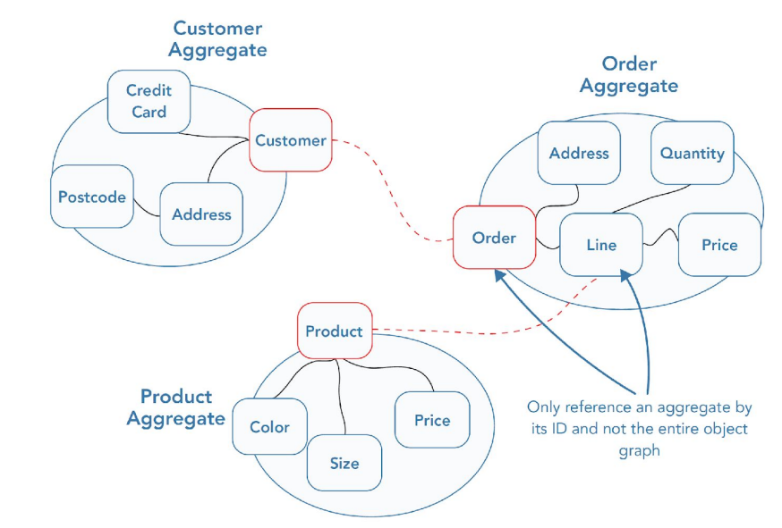
- Indien we een groot model hebben met veel objecten, kunnen we het best opspliten in aggregaten
- Een aggregaat heeft één root entity en een aantal value objecten
- In de database zal één transactie dan ook één aggregaat updaten of aanmaken. Wanneer meerdere transacties nodig zijn gebruik je best een saga.
- Het is de bedoeling dat we in de applicatie alleen verwijzen naar de root van een aggregaat. Niet-root entiteiten kunnen wel verwijzingen bevatten naar de root van andere aggregaten.
- Referenties tussen aggregaten moeten primary keys gebruiken
Repository
- Is verantwoordelijk voor het ophalen en persisteren van aggregate roots
- Verbergt onderliggende technologie
Factory (niet besproken)
Queries in a microservice architecture
Een query leest het domeinmodel om een specifieke view te genereren. Een command of een domain event zal het domein updaten om de business task te vervullen.
Als je queries laat afhandelen door het domeinmodel, stuiten we snel op een aantal nadelen. We moeten meerdere aggregaten laden voor één view. We stellen de interne staat van domeinobjecten bloot. Als we de performantie van queries willen verbeteren, zullen we aanpassingen moeten doen in het domeinmodel.
Een manier om hiermee om te gaan is CQRS.
Command-Query Responsibility Segregation (CQRS)
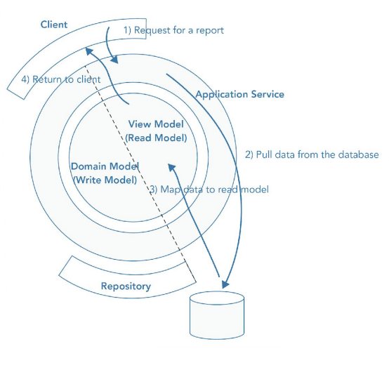
CQRS is een patroon dat het domeinmodel in twee delen splitst. Het read model bevat de nodige voorzieningen voor queries en het write model bevat dan de functies voor business tasks. We voorzien dus twee verschillende modellen.
//TODO misschien voorbeeld van FTGO
The API composition pattern

Een API composer implementeert een query hem samen te stellen uit queries naar één of meerdere provider services. Elk van deze provider services is eigenaar van zijn data. De API composer voorziet dan een API die zich voordoet als één service, maar eigenlijk meerdere queries uitvoert om een samengesteld resultaat af te leveren.
Wie moet er nu de rol innemmen van API composer?
- Client
- API gateway: als de query deel is van de externe API
- Service: als de query wordt gebruikt door meerdere interne services
Het gebruikt van een API composer is simpel en intuïtief, maar zorgt wel voor meer overhead. Het kan dat je availability minder goed is omdat de composer gedeeltelijke of gecachte data teruggeeft. Om dat hij meerdere queries naar meerdere databanken doet, verlies je ook transactionele dataconsistentie.
4 - Interaction between microservices
5 - Scaling and caching
6 - Resiliency and chaos engineering
7 - Organizational structures
----------Labo-----------
Labo 1
Business Domein
Een luchthavenuitbater is een bedrijf dat in het bezit is van een luchthaven en deze uitbaat. Brussels Airport Company is bijvoorbeeld de eigenaar en uitbater van Brussels Airport. Zij zijn in bezit van alle nodige infrastructuur (inkomhal, terminals, startbanen...) om vluchten te laten landen en opstijgen. Vluchten worden uitgevoerd door luchtvaartmaatschappijen zoals Ryanair. Een luchtvaartmaatschappij onderhandelt met een luchthavenuitbater om tegen betaling een aantal vliegtuigen te laten opstijgen en landen. De luchthavenuitbater voorziet een tijdslot, een gate, een startbaan, incheckbalies, een security-check, enzovoort. Verder zorgt de luchthavenuitbater voor het vlot verloop van alle pre-flight en post-flight operaties, zoals het bijtanken van vliegtuigen, uit- en inladen van passagier bagage, enzovoort. Als een vliegtuig wil opstijgen of landen moet het toestemming krijgen van de (externe) luchtverkeersleiding (Air Traffic Control - ATC). ATC beheert het luchtruim boven het land. Zij geven aan welke start- en landingsbaan door welk vliegtuig mag gebruikt worden. Deze toewijzing gebeurt in de eerste plaats op basis van veiligheidscriteria, maar er wordt ook rekening gehouden met geluidsoverlast per baan.
Business Scenarios
De volgende business scenarios zijn geschreven vanuit het perspectief van een luchthavenuitbater.
2.1 Vlucht aanmaken
Luchtvaartmaatschappijen (Engels: “airline”) die onze luchthaven wensen te gebruiken voor een inkomende (“inbound”) of uitgaande (“outbound”) vlucht moeten eerst een landings- of vertrekslot reserveren. Op elk tijdstip zijn er slechts een beperkt aantal slots beschikbaar. Een luchtvaartmaatschappij zal eerst een offerte opvragen bij ons. Wij berekenen onze prijs op basis van het tijdstip, het type vliegtuig en de beschikbare capaciteit bij ons bagagepersoneel. Zo zijn de nachtelijke slots duurder omdat er minder beschikbaar zijn, mogen sommige vliegtuigtypes ‘s nachts niet landen omwille van lawaaioverlast, en geven we een voordeliger tarief aan Europese maatschappijen. De maatschappij kan dan beslissen om de offerte goed te keuren. Op dat ogenblik zullen wij het landings- en vertrekslot reserveren en zullen wij een voorlopige parkeerplaats voor een vliegtuig (“parking area”) toewijzen. De maatschappij bezorgt ons ook het vluchtnummer dat ze gekregen hebben van de internationale luchtvaartautoriteit.
Een goede eerste stap is om aan te duiden welke actoren te vinden zijn in een business scenario. Actoren zijn andere partijen die interageren met het te ontwerpen systeem. In dit scenario zijn actoren dus alle partijen die interageren met het luchthavensysteem.
Welke actoren zijn aanwezig in de eerste business scenario (2.1)?
In dit scenario is er maar één actor, namelijk
- Een luchtvaartmaatschappij
De tekst spreekt ook over de luchthaven, maar dit is het systeem zelf en dus geen actor. De tekst spreekt ook over de internationale luchtvaartautoriteit, maar die interageert in dit scenario enkel met de maatschappij en is dus ook geen actor.
De volgende stap om systeemoperaties op te stellen is om aan te geven of een systeemoperatie "inbound" of "outbound" is. Namelijk, wordt deze operatie door een actor opgestart of door het systeem zelf.
Als laatste geven we de systeemoperatie ook een naam. Hiervoor gebruiken we de Java conventies en camel case. Dit doen we steeds in het Engels omdat deze naam bij de uiteindelijke implementatie gebruikt zal worden. Code schrijf je steeds in het Engels zodat je er met een internationaal team aan kan werken. Als voorbeeld een systeemoperatie om een ticket te reserveren.
reserveTicket()
Geef de namen van de systeemoperaties voor business scenario 2.1 en orden deze onder "inbound", "outbound" en per actor in een tabel zoals dit voorbeeld.
| Actor | Inbound | Outbound |
|---|---|---|
| Toeschouwer | reserveTicket() cancelTicket() |
| Actor | Inbound | Outbound |
|---|---|---|
| Luchtvaartmaatschappij | requestQuote() acceptQuote() |
Beide operaties worden opgestart door de luchtvaartmaatschappij en zijn dus inbound, ook al is confirmQuote een antwoord.
2.2 Inkomende vlucht
Voor inkomende vluchten krijgen wij twee types informatie door: passagierslijsten en aanvliegroutes. Passagierslijsten en bagagelijsten krijgen we van de uitbater van de luchthaven van waaruit de vlucht is vertrokken. De passagierslijst verandert vaak last minute omdat soms (ingecheckte) mensen niet tijdig opdagen. Deze lijst wordt dus pas doorgegeven zodra de cabinedeur gesloten is (“boarding process completed”). Om veiligheidsredenen moeten wij ten alle tijde een correct overzicht te hebben van alle passagiers die zich in de luchthaven bevinden. Aanvliegroutes en -tijdstippen worden toegewezen door ATC. Met deze informatione kunnen wij alle grondoperaties (“apron management”) plannen. Het aanvliegtijdstip wordt ten laatste 20 minuten voor de effectieve landing gecommuniceerd aan de piloot en aan ons. Afhankelijk van het type vliegtuig moet een parkeerplaats (“parking area”) voor het vliegtuig worden toegewezen. Bij de meeste vliegtuigen moeten de passagiers uitstappen via een “jetway”, deze krijgen dus een parkeerplaats aan een gate. Kleinere vliegtuigen krijgen een parkeerplaats elders op de apron. Eens de gate bekend is kan deze ook worden weergegeven op de schermen in de aankomstterminal. Zodra een vliegtuig de landing inzet en de gate gekend is, worden werkorders doorgegeven aan onze interne diensten voor bagageafhandeling (“bagage handling”), onderhoud (“maintenance”) en tanken (“refuel”).
Welke interacties zijn er per actor te vinden in business scenario 2.2? Orden deze op basis van de actoren.
De reservatie van een landings- of vertrekslot omvat twee interacties.
- De offerte opvragen
- De offerte goedkeuren
Het reserveren van landings- en vertrekssloten is een interne actie en is dus geen systeemactie.
Doe nu hetzelfde voor business scenario 2.2. Welke actoren zijn daar aanwezig?
Dit scenario heeft meerdere actoren
- Een externe luchthaven, namelijk de luchthaven van waar de vlucht komt.
- De ATC (Air Traffic Controller)
- De dienst bagage
- De dienst onderhoud
- De dienst tanken
Welke interacties zijn er per actor te vinden in business scenario 2.2? Orden deze op basis van de actoren.
Een externe luchthaven.
- de passagierslijst doorsturen
- de bagagelijst doorsturen
De ATC (Air Traffic Controller)
- de aanvliegroutes en -tijdstippen doorsturen
De dienst bagage
- krijgt een werkorder
De dienst onderhoud
- krijgt een werkorder
De dienst tanken
- krijgt een werkorder
Hoewel de verschillende grond diensten zelf geen acties ondernemen op het systeem hebben ze elk wel een systeemoperatie, namelijk het systeem stuurt hen iets door.
Geef nu ook voor business scenario 2.2 de namen van de systeemoperaties en orden deze onder "inbound", "outbound, en per actor in een tabel.
| Actor | Inbound | Outbound |
|---|---|---|
| Externe Luchthaven | sendIncomingPassengerList() sendIncomingLuggageList() | |
| ATC | sendIncomingFlightDetails() | |
| Bagage | SendLuggageWorkorder() | |
| Onderhoud | SendMaintenanceWorkorder() | |
| Tanken | SendFuelingWorkorder() |
2.3 Geparkeerd vliegtuig
Zodra een vliegtuig geparkeerd staat, worden de passagiers begeleid om van boord te gaan en wordt de bagage uitgeladen. Om veiligheidsredenen mag men enkel beginnen met het vliegtuig vol te tanken als beide voorgaande procedures voltooid zijn. De hoeveelheid brandstof wordt bepaald op basis van de volgende bestemming. Deze informatie is onderdeel van het werkorder dat we aan de operator geven. Eenmaal het tanken is voltooid, wordt het werkorder afgetekend. Vanaf dan mag de onderhoudsploeg en de “flight crew” van de volgende vlucht aan boord. De crew voert een aantal “pre-flight checks” uit. De onderhoudsploeg tekent op het einde hun werkorder af. Als alle werkorders zijn afgetekend en alle pre-flight checks zijn uitgevoerd door de crew, kan de “boarding procedure” voor bagage en passagiers van de uitgaande vlucht starten.
Voer nu dezelfde stappen uit voor de volgende business scenarios om de tabel te maken met systeemoperaties.
Maak een tabel met de systeemoperaties voor business scenario 2.3.
| Actor | Inbound | Outbound |
|---|---|---|
| Bagage | completeLuggageWorkOrder() | |
| Onderhoud | completeMaintenanceWorkOrder() | |
| Tanken | completeFuelingWorkOrder() | notifyPlaneEmpty() |
| Crew | preflightCheckCompleted() | notifyFuelingDone() |
2.4 Check-in
Passagiers komen aan in de luchthaven voor hun vlucht. Daarvoor dienen ze eerst en vooral in te checken. Door in te checken kent ons systeem hun gegevens. Met die gegevens wordt een persoonlijke boarding pass gemaakt. Met die boarding pass kunnen ze dan hun bagage inchecken. Hiervoor wordt bij de bagageafhandelaars een of meerdere stukken (“items”) aangemaakt met unieke code, die gelinkt zijn aan de boarding pass. Deze barcode wordt dan aangebracht met een sticker op het item zodat het intern kan gerouteerd worden.
Maak een tabel met de systeemoperaties voor business scenario 2.4.
| Actor | Inbound | Outbound |
|---|---|---|
| Passagier | checkIn() addLuggage() |
2.5 Uitgaande vlucht
Het personeel aan de balie kan pas starten met het “boarden” van de passagiers als alle werkorders afgetekend zijn en alle pre-flight checks werden uitgevoerd door de crew. Ook dan pas mogen de bagageafhandelaars starten met het inladen van de ruimbagage. Het baliepersoneel opent de gate. Via terminals en luidsprekers wordt dit aangekondigd aan de passagiers. Het personeel scant de boarding passes van passagiers voor ze op het vliegtuig stappen. Vijftien minuten voor de voorziene vertrektijd wordt de gate gesloten. Soms gebeurt het ook dat sommige handbagage toch nog in het laadruim moet geplaatst worden (bv. kinderwagens of rolstoelen), of als er geen plaats meer is in de cabine zelf. Als het gate personeel, de flight crew, en de bagageafhandelaars laten weten dat ze klaar zijn met hun taken, kan het vliegtuig opstijgen. Het vliegtuig taxiet naar een startbaan toegewezen door ATC. Daar vertrekt het vliegtuig en eindigen de taken van de luchthavenuitbater. Wij geven aan de bestemmingsluchthaven de definitieve passagiers- en bagagelijsten door.
Maak een tabel met de systeemoperaties voor business scenario 2.5.
| Actor | Inbound | Outbound |
|---|---|---|
| Externe luchthaven | sendOutgoingLuggageList() sendOutgoingPassengerList() | |
| Baliepersoneel | boardPassenger() addLuggage() closeGate() openGate() | |
| Bagage | notifyPreflightCheckCompleted() |
Hier zien we al het personeel van de luchtvaartmaatschappij als "Crew". Interacties tussen dit personeel gaan niet via het systeem, en staan hier dus niet op.
Probeer nu de verschillende verantwoordelijkheden van het systeem te groeperen in services. Maak een schets van het service diagram. Doe dit in drie stappen. Bij iedere stap reflecteer je of er iets moet aangepast worden van de vorige stap.
- Maak een een initiële splitsing in services
- Geef aan welke services zorgen voor welke systeemoperaties
- Maak interne operaties voor services die moeten samen werken.
Merk op dat er verschillende manieren zijn om de opsplitsing te maken:
- Op basis van de business capabilities. Business capabilities zijn de verschillende dingen dat een organisatie doet en/of voorziet. Bijvoorbeeld: een bank slaat geld op, geeft leningen uit, en schrijft geld over. Iedere capabiliteit kan een eigen service zijn.
- Op basis van de subdomeinen. Subdomeinen zijn verschillende contexten waarin éénzelfde term een lichtjes andere betekenis kan hebben. Bijvoorbeeld "een bankrekening" in de context van een overschrijving heeft een nummer, een eigenaar en een bedrag. Een bankrekening in de context van geld afhalen heeft een limiet, een saldo en een transactiekost. Dit zijn twee aparte subdomeinen en zullen zich dus vertalen naar twee verschillende microservices
- Op basis van technologie. Om een overschrijving te doen moet de software interageren met Swift door middel van een extern ontwikkelde COBOL module. Deze logica zit dus best in een aparte service zodat de rest van de applicatie een andere programmeertaal kan gebruiken.
- Op basis van data. Om een levensverzekering aan te gaan moet een klant persoonlijke en medische informatie verwerken. De programmeurs die deze logica schrijven moeten speciaal opgeleid en opgevolgd worden om er zeker van te zijn dat de privacy van de klanten beschermd wordt. Functionaliteiten die deze data gebruiken zitten dus best in aparte microservices zodat maar een beperkt aantal werknemers toegang hebben tot code die dit verwerkt.
Let op de volgende zaken:
- Één service dient één verantwoordelijkheid te hebben.
- Een service dient onafhankelijk deploybaar en upgradebaar te zijn.
- Zorg voor een losse koppeling tussen services.
Tip: diagrams.net is een eenvoudige tool om snel diagrammen te maken. Plak het diagram in het antwoordvenster.
Dit is één mogelijke opdeling. Meerdere opdelingen zijn mogelijk maar het kan nuttig zijn om eens te kijken naar het verschil tussen jouw opdeling en deze. Wat voor impact heeft dit op de complexiteit? Is het maximum aantal operaties per service meer of minder?
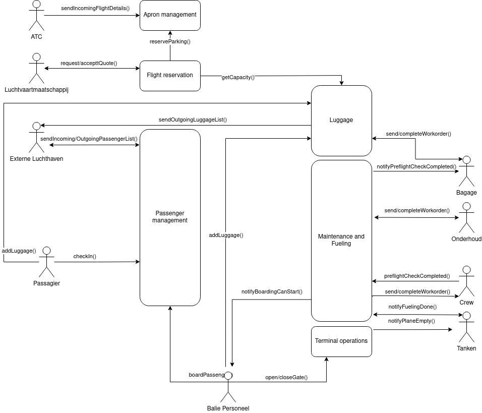
Opmerking:
De "Maintenance and Fueling" service in dit voorbeeld heeft heel veel systeemoperaties. Dit wijst mogelijk op een probleem. In dit voorstel is deze service, naast maintenance en fueling, ook verantwoordelijk voor de orkestratie tussen de verschillende partijen.
- Maintenance en fueling apart opdelen gaat weinig impact hebben omdat de orkestratie zorgt voor het hoge aantal systeemoperaties.
- Een mogelijke oplossing is om een aparte service te maken "flight management" die de orkestratie op zich neemt. Dit gaat dan opnieuw een service zijn die aan heel veel services hangt, maar dan zijn de domeinen beter gescheiden.
Labo 2
De eerste stap om de architectuurdefinitie neer te schrijven is om de systeemoperaties om te zetten naar API definities. Hieronder zie je de API definitie van requestQuote().
| operation and type | requestQuote - inbound command |
|---|---|
| technology | REST |
| actor | airline |
| parameters | slot |
| returns | priceRequest |
| precondition | The slot is in the future and in a reasonable timeframe.The slot is available. |
| postcondition | A price request is created in a state of pending acceptance. |
Maak de API definitie voor de systeemoperatie acceptQuote().
| operation and type | acceptQuote - command |
|---|---|
| technology | REST |
| actor | airline |
| parameters | priceRequestID, flight number |
| returns | - |
| precondition | The price request exists in our system |
| postcondition | The price request is updated to a state of accepted. The flight is created. The slot (of the price request) is reserved for this flight. A parking area is assigned to the flight. |
Echter, sommige systeemoperaties zoals outbound operaties zijn minder eenvoudig om te zetten naar een API call. De systeemoperatie "SendLuggageWorkorder", bijvoorbeeld, kan niet zomaar omgezet worden naar een HTTP call of een event op een message bus.
- Om een HTTP call te ontvangen moet een device aan staan en netwerkverbinding hebben. Dit maakt het systeem echter heel broos en is dus geen goede oplossing.
- Een message queue kan wel asynchroon gelezen worden. Echter, afhankelijk van de implementatie, kunnen berichten maar eenmalig gelezen worden, of zijn berichten readonly. Het is hiermee dus niet mogelijk om op een later tijdstip actieve workorders opnieuw op te vragen.
Beide opties hebben grote limitaties. Een betere manier om dit te implementeren is om een inbound query te gebruiken. De query "getLuggageWorkorders()", bijvoorbeeld, kan door de bagagedienst gebruikt worden om te kijken welke workorders er actief zijn. Optioneel kan een tweede call toegevoegd worden, namelijk een outbound command "notifyNewLuggageWorkorder()". Dit werkt via een message bus om de bagagedienst een notificatie te geven dat een nieuwe werkorder beschikbaar is. Op dat moment kan de bagagedienst de eerste query uitvoeren om de nieuwe werkorder te zien.
Geef de API definitie van de calls "getLuggageWorkorders" en "notifyNewLuggageWorkorder".
| operation and type | getLuggageWorkorders - command |
|---|---|
| technology | REST |
| actor | luggage |
| parameters | - |
| returns | List of LuggageWorkOrder |
| precondition | At least one Luggage workorder exists |
| postcondition | - |
| operation and type | notifyNewLuggageWorkOrder - command |
|---|---|
| technology | message |
| actor | luggage |
| parameters | - |
| returns | - |
| precondition | A new workorder was just created |
| postcondition | - |
Gezien het verzenden van luggage, maintenance en fueling workorders heel gelijkaardig zijn, is het zelf mogelijk om deze systeemoperaties samen te nemen.
Dit resulteert in twee operaties, getWorkorders en notifyNewWorkorder.
Geef de API definitie van de calls "getWorkorders" en "notifyWorkorder".
| operation and type | getWorkorders - command |
|---|---|
| technology | REST |
| actor | luggage, maintenance and fueling |
| parameters | - |
| returns | List of WorkOrder |
| precondition | At least one workorder exists |
| postcondition | - |
| operation and type | notifyNewWorkOrder - command |
|---|---|
| technology | message |
| actor | luggage, maintenance and fueling |
| parameters | - |
| returns | - |
| precondition | A new workorder was just created |
| postcondition | - |
Doe nu hetzelfde voor de overige systeemoperaties van business scenario 2.2
Dit zijn alle systeemoperaties:
| Actor | Inbound | Outbound |
|---|---|---|
| Externe Luchthaven | sendIncomingPassengerList() sendIncomingLuggageList() | |
| ATC | sendIncomingFlightDetails() | |
| Bagage | SendLuggageWorkorder() | |
| Onderhoud | SendMaintenanceWorkorder() | |
| Tanken | SendFuelingWorkorder() |
API definities:
| operation and type | sendIncomingPassengerList - command |
|---|---|
| technology | REST |
| actor | External Airport |
| parameters | flightId, IncomingPassengerList |
| returns | - |
| precondition | flight is inbound fight and price request accepted |
| postcondition | passengers created and added to the flight |
| operation and type | sendIncomingLuggageList - command |
|---|---|
| technology | REST |
| actor | External Airport |
| parameters | flightId, incomingLuggageList |
| returns | - |
| precondition | flight is inbound fight and price request accepted |
| postcondition | luggage is added to flight |
| operation and type | sendIncomingFlightDetails - command |
|---|---|
| technology | REST |
| actor | ATC |
| parameters | flightId, IncomingFlightDetails |
| returns | - |
| precondition | flight is inbound fight and price request accepted |
| postcondition | details are added to the flight |
Beschrijving en API
De tweede stap om de architectuurdefinitie neer te schrijven is om voor iedere service een beschrijving en API te geven.
De beschrijving geeft de verantwoordelijkheden van de service aan, welke informatie de service bijhoudt en in grote lijnen wat de functionaliteit van de service is.
De API van een service is een oplijsting van de API calls waar deze service rechtstreeks mee in contact komt. Dit gaat zowel over API calls van systeemoperaties als interne API calls. Met "rechtstreeks" wordt bijvoorbeeld bedoeld dat een systeemoperatie enkel opgelijst wordt bij de service die deze operatie binnenkrijgt en er op antwoord. Achterliggende services die intern gecontacteerd worden bij het verwerken van een systeemoperatie gaan enkel deze interne calls oplijsten in hun API. Niet de systeemoperatie zelf.
Merk op dat iedere interne call in de API van minstens twee services zal terecht komen: eenmaal inbound en eenmaal outbound.
Als voorbeeld de beschrijving en API van de luggage service.
Luggage service
De Luggage service is verantwoordelijk voor bagage items en bagage workorders. De service houdt een overzicht bij van welke bagage items zich waar bevinden en met welke vlucht deze geassocieerd zijn. Deze service houdt ook bij welke workorders er lopen en wat de verwachte bagagecapaciteit in de toekomst zal zijn.
Bagagestukken worden toegevoegd wanneer ze afgeleverd worden aan de check-in, wanneer ze bij boarding worden ingechecked, of wanneer ze op een inkomende vlucht aankomen. De service geeft werkorders door aan het bagage personeel die aangeven welke bagage in een vliegtuig moet geladen worden. De service houdt ook bij wat de verwachte bagagecapaciteit in de toekomst is en geeft op basis van deze informatie door of er al dan niet genoeg capaciteit is voor een extra vlucht in de toekomst. Wanneer een vlucht vertrekt stuurt deze service de lijst van bagage door naar de bestemming van de vlucht.
| operation | type | technology | function |
|---|---|---|---|
| getCapacity | inbound query | message | internal (flight reservation) |
| addEstimate | inbound command | message | internal (flight reservation) |
| sendOutgoingLuggageList | outbound command | REST | system operation (external airport) |
| sendIncomingLuggageList | inbound command | REST | system operation (external airport) |
| addLuggage | inbound command | REST | system operation (passenger, gate personnel) |
| getWorkorders | inbound query | REST | system operation (luggage) |
| notifyNewWorkorder | outbound event | message | system operation (luggage) |
| completeWorkorder | inbound command | REST | system operation (luggage) |
Doe nu hetzelfde voor de service "Maintenance and Fueling"
| operation | type | technology | function |
|---|---|---|---|
| notifyPreflightCheckCompleted() | outbound event | message | system operation (luggage) |
| notifyFuelingDone() | inbound event | message | system operation (fueling) |
| notifyBoardingCanStart | outbound event | message | system operation (balie personeel) |
| getWorkorders | inbound query | REST | system operation (crew, fueling) |
| notifyNewWorkorder | outbound event | message | system operation (crew, fueling) |
| completeWorkorder | inbound command | REST | system operation (luggage) |